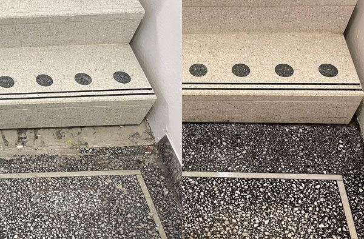
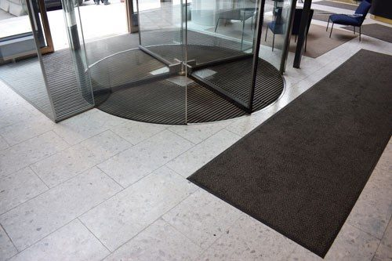

Renovering av terrazzo och natursten
För att öka naturstenens och terrazzogolvets livslängd kan man slipa om golvets ytskikt, spackla sprickor och laga skador med samma material. Resultatet blir ett golv som inte bara varar längre, utan som är finare att se på och lättare att hålla rent.
Tjänster
Slipning, lagning och grovrengöring
Slipning
Terrazzo och natursten
Vi slipar om ytskiktet på golv och trappor och ni väljer finish – matt, halvblankt eller blankt.
Läs mer (PDF)Lagning
Terrazzo och naturstensytor
Vi lagar terrazzo och alla typer av naturstensytor med samma material, så att lagningen smälter in.
Läs mer (PDF)Grovrengöring
Terrazzo, natursten, klinker och betong
En rengöring på djupet som avlägsnar fett och partiklar – ett mycket prisvärt sätt att få fram ny lyster och ge stenen tillbaka sitt skydd.
Läs mer (PDF)
Ytfinish
Ni väljer själva hur ert ”nya” golv ska se ut
Matt
2-stegs slipning till 220 grit + behandling
En slät, lättstädad yta. Med regelbundet underhåll med Steinfix 60 blir ytan något blankare med tiden. Förr den vanligaste finishen på nya terrazzogolv.
Halvblankt
3-stegs slipning till 400 grit + behandling
En blank men inte speglande yta som håller sig blank med Steinfix 60. Den vanligaste finishen på terrazzogolv i dag.
Blankt
4-stegs slipning till 800 grit + polering eller våtkristallisering
En speglande yta som kräver mer underhåll för att behålla glansen. Vanligast på naturstensgolv.
Projekt · reparation och restaurering
Påbyggnad – lagning mot ny trappa
Här är ett projekt där en kund valt att bygga på en våning i sin fastighet. Det betyder att det blivit en skarv som behöver lagas med ny terrazzo mellan det gamla högsta våningsplanet och den nya monterade trappan.
1Påbyggnad Skarven mellan det gamla våningsplanet och den nya trappan.
2Räcke Det gamla räcket har behövts kapas bort för montering av den nya trappan.
3Bilning Vi har bilat bort delar av det gamla golvet så att nya raka kanter bildas och vi kan fylla med 15 mm ny terrazzo.
4Räcke Även det gamla räcket har tagits bort så att det inte blir synligt när det nya golvet lagts.
5Formning Mot trappan har vi tillverkat en form, eftersom terrazzomaterialet är flytande när det läggs.
6Nygjutet Terrazzolagningen är nygjuten.
7Närbild Nygjuten terrazzo på nära håll.
8Slipning Terrazzolagningen är färdigslipad.
9Närbild slipning Den färdigslipade lagningen på nära håll.
10Skurkant En ny skurkant har gjutits.
11Slutresultat Färdig terrazzolagning.
Skydda golvet efter renoveringen
Skrapmattor i entrén hindrar smuts och väta från att dras in, och taktila ledstråk och kontrastmarkeringar kan läggas in i samband med renoveringen. Vi är återförsäljare av Steinfix och guidar er till rätt golvvårdsprodukter.

Behöver ert golv en ny lyster?
Berätta om golvet eller trappan, så föreslår vi slipning, lagning eller grovrengöring.